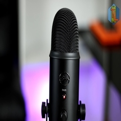

Microfono
Hoy en día cualquier computador moderno incluye algún tipo de micrófono. Ya sean internos o externos, como los que vienen incorporados a los audífonos, tienen una amplia gama de aplicaciones que veremos más adelante. Es un dispositivo de entrada de audio. Se pueden conectar a la computadora para grabar sonido o para comunicarse por internet con otras personas. Muchos equipos vienen con micrófonos incorporados dentro de la pantalla o monitor, especialmente los computadores portátiles
Caracteriticas
Es compatible con los dispositivos moviles mediante conexiones tipo C a USB, es de barras de acero de 2cm cada uno, tiene una fabricacion solida de acero, tiene diferentes colores de acabado y se atornilla con una base U.
